箱をすべてターゲットに押そう！
矢印キー: 移動
Q/E: カメラ回転
Z: 元に戻す | R: リスタート
M: ミュート | Esc: ポーズ
マウス: ドラッグで回転、スクロールでズーム
J: 日本語 / English
ゲームを読み込めませんでした。ネットワーク接続を確認して、ページを再読み込みしてください。
The game could not be loaded. Check your network connection and reload the page.